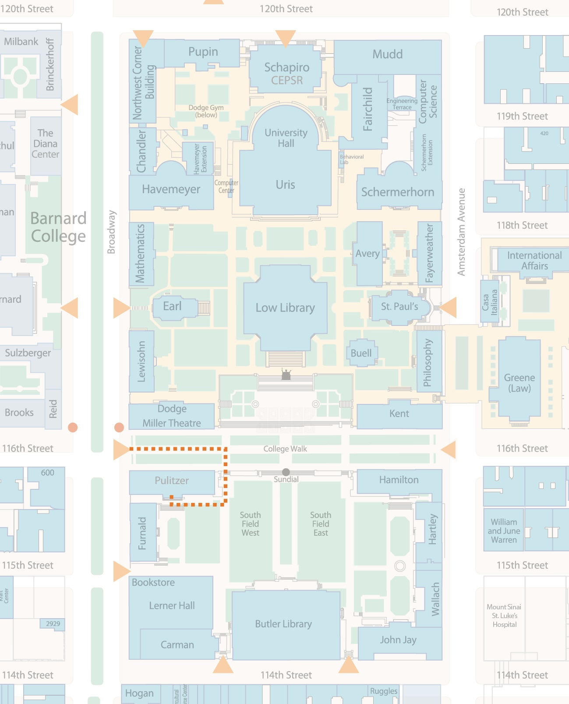

Brown Institute for Media Innovation
Columbia School of Journalism
2950 Broadway, New York, NY

Directions to Columbia University campus is linked here.
Enter the campus at 116 St. and Broadway and navigate via the dashed orange path to Pulitzer Hall. The Brown Institute for Media Innovation will be to your right side.